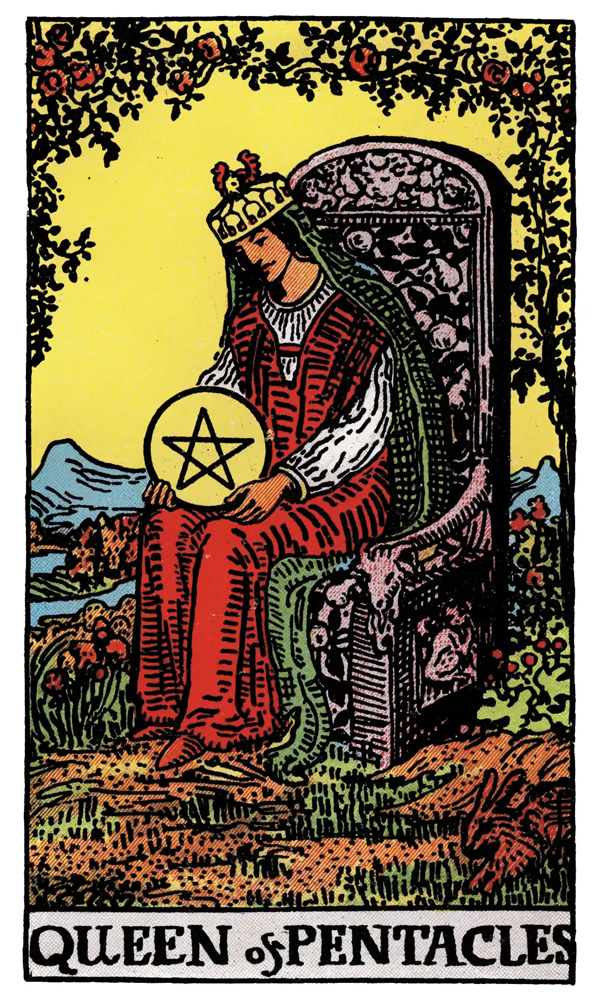

Queen of Pentacles

A.E.W.
Upright
Opulence, generosity, magnificence, security, liberty.
Additionally
Dark woman; presents from a rich relative; rich and happy marriage for a young man.
Recurrence
2 - Sincere friends.
3 - Deception by women.
4 - Great debate.
Reversed
Evil, suspicion, suspense, fear, mistrust.
Additionally
An illness.
Recurrence
2 - Work.
3 - Gluttony.
4 - Bad company.
S.L.M.M.
Upright
A dark Woman, a generous Woman, Liberality, Greatness of Soul, Generosity
Reversed
Certain Evil, a suspicious Woman, a Woman justly regarded with Suspicion, Doubt, Mistrust.
Description
The face suggests that of a dark woman, whose qualities might be summed up in the idea of greatness of soul; she has also the serious cast of intelligence; she contemplates her symbol and may see worlds therein.